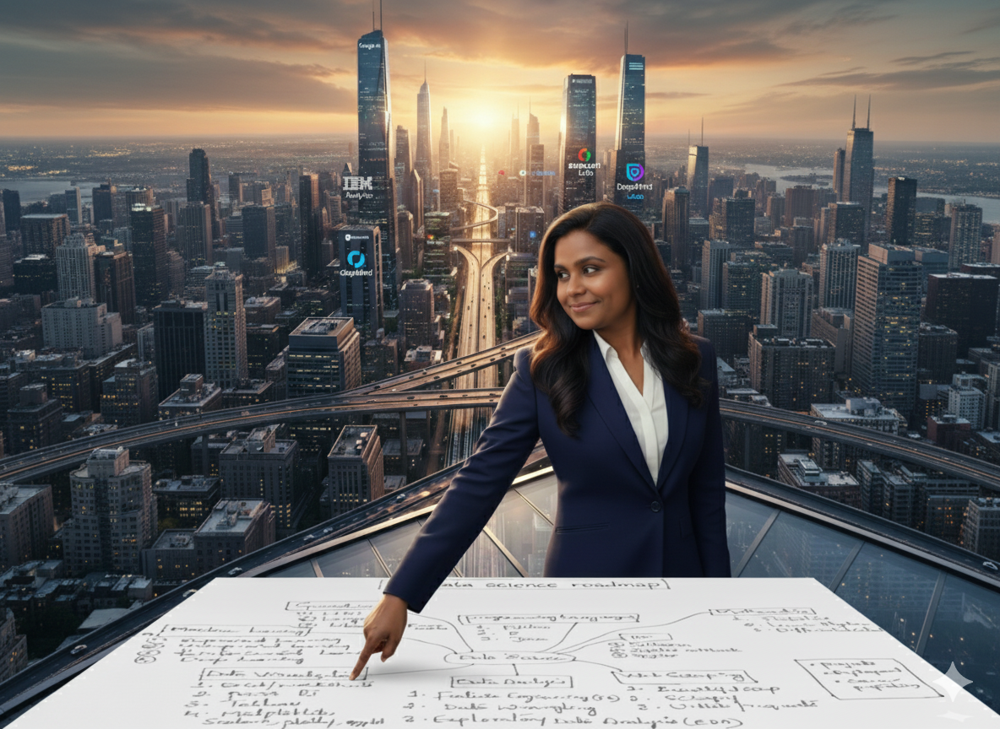
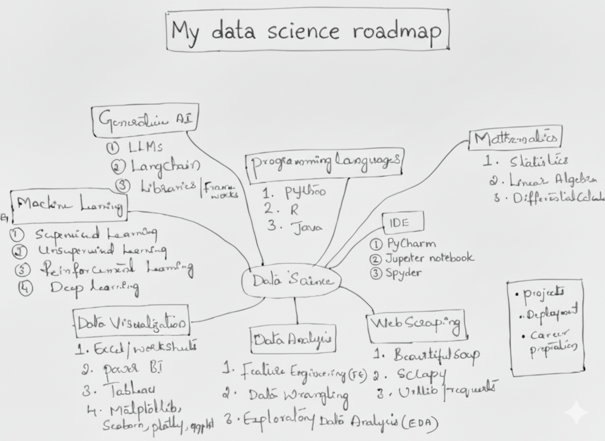

I’m still on my own journey of learning Data Science, and while exploring different courses and projects, I created this roadmap to keep myself consistent and clear about what to learn next. It’s a structured plan I personally follow — and I’m sharing it here for anyone who’s walking the same path and wants a clear direction to begin.
Start with Python — it will cover almost 90% of your data science needs. Learn to manipulate and analyze data using Pandas and NumPy. Once confident, move into visualization libraries and eventually explore R (great for statistics) or Java/JavaScript for domain-specific use cases.
👉 Pick one language and master it deeply. Python is your best bet.
Get comfortable with IDEs like Jupyter Notebook (for exploration), PyCharm, or VS Code (for larger projects).
This is where most beginners underestimate the effort — but trust me, around 70% of a data scientist’s job happens here.

Data is useless unless you can communicate it effectively. Visualization is storytelling — not just pretty charts.
You don’t need to be a math genius. Focus only on the math that directly supports machine learning:
💡 You don’t need to be Ramanujan — just understand the math that helps your models make sense.
Here’s where the fun begins! Start with traditional ML algorithms before diving into deep learning.
👉 Practice using libraries like Scikit-learn, TensorFlow, and PyTorch. Theory is important — but practice is where you grow.
This stage makes your learning real — it’s where theory meets impact.
👉 Certificates are good, but projects speak louder. Your portfolio is your golden ticket to opportunities.
Becoming a data scientist is not about speed — it’s about clarity, consistency, and curiosity. Don’t rush through courses; instead, build understanding through hands-on work and reflection. You’ll realize that the magic happens when you connect all the dots — from data cleaning to storytelling.
Remember: every expert you admire was once a beginner who didn’t give up. Follow this roadmap, stay consistent, and your journey from “I’m learning” to “I’m doing” will happen sooner than you expect.
✨ Your roadmap is your compass. Keep walking — the destination is worth it. ✨